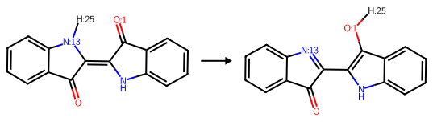

インジゴのプロトン移動
Giovanni Gravili ![]()
概要
インジゴの N–H のプロトンを、PM6 で隣のカルボニル酸素へ移します。緩和スキャンで障壁の領域を見つけ、遷移状態を精密化して唯一の虚振動で確かめ、反応経路を両方の互変異性体まで辿って、その B3LYP の静電ポテンシャルを比べます。
キーワード
インジゴ, プロトン移動, PM6, 遷移状態, IRC, 静電ポテンシャル
ヒント承認
- PM6 の鞍点、その IRC、両方の端点の極小は検証しました。
- 三つの B3LYP の密度と ESP の計算は終わりました。
少ない多い
2026年10月15日(木)
この日に始まった計算はありません。
2026年10月16日(金)
| 状態 | 計算 | ジョブ |
|---|---|---|
 |
PM6 の S_0 構造を最適化 |
2026年11月9日(月)
この日に始まった計算はありません。
分子とプロトン移動の座標
インジゴを PM6 で扱い、\ce{H25} を \ce{N13} からカルボニル酸素 \ce{O1} へ移します（図 1）。移動は 2 つのプロトン距離の差に沿って追います。この差は、プロトンが酸素へ近づくにつれて大きくなります。
q=r_{\mathrm{NH}}-r_{\mathrm{OH}}.

表と議論では、PM6 の電子エネルギー差 E-E_0 を使います。E_0 は別に最適化した N–H の極小のエネルギーです。一方、エネルギーのプロットでは、最後に記録した逆向きの IRC の点をゼロにとり、これが最適化した極小であるとは仮定しません。ビューアは反応経路を N–H 側から O–H 側へ辿ります（図 2）。
反応経路に沿った構造。N–H と O–H の距離は表示中のフレームに追随します。
移動に沿ったエネルギー
緩和スキャンは q を 0.2\,\text{\AA} ずつ離れた 11 個の目標値に固定します。その最大が遷移状態の探索の出発点になり、IRC はその後、拘束のない経路を鞍点から \pm s に沿って下ります（図 3）。
鞍点は N–H の極小より 92.9\,\mathrm{kJ}\,\mathrm{mol}^{-1} 高く、O–H 互変異性体は 70.0\,\mathrm{kJ}\,\mathrm{mol}^{-1} 高いので、O–H 互変異性体が戻る障壁はわずか 22.8\,\mathrm{kJ}\,\mathrm{mol}^{-1} です（表 1）。
| 構造 | スキャン座標 q\;[\text{\AA}] | 距離 r_{\mathrm{NH}}\;[\text{\AA}] | 距離 r_{\mathrm{OH}}\;[\text{\AA}] | 相対エネルギー E-E_0\;[\mathrm{kJ}\,\mathrm{mol}^{-1}] | 反応物基準のエネルギー E-E(s_\mathrm{R})\;[\mathrm{kJ}\,\mathrm{mol}^{-1}] |
|---|---|---|---|---|---|
| N–H 極小 | -1.33 | 1.0133 | 2.3434 | 0 | -8.0142 |
| スキャンの極大 | 0.26997 | 1.4823 | 1.2123 | 90.758 | 82.744 |
| 遷移状態 | 0.28555 | 1.4923 | 1.2068 | 92.876 | 84.862 |
| O–H 極小 | 1.2887 | 2.3047 | 1.016 | 70.036 | 62.022 |
スキャンの目標値、経路座標、勾配
エネルギープロファイルの背後にある緩和スキャンと IRC を、その構造と残りの勾配とともに示します。
緩和スキャン
各目標値では q を固定し、他のすべての座標を緩和するので、スキャンの最大は拘束された点であり、鞍点ではありません（図 4）。デカルト勾配の RMS は拘束した方向の成分を保つので、ゼロになるとは限りません（図 5）。
g_{\mathrm{RMS}}=\sqrt{\frac{1}{3N}\sum_{j=1}^{3N}\left(\frac{\partial E}{\partial x_j}\right)^2}.
緩和スキャンの構造。N–H と O–H の距離は表示中のフレームに追随します。
IRC
IRC は符号付きの質量加重した経路長 s に沿って進みます。破線の s=0 は鞍点を示し、正の s は酸素の側です。
ds^2=\sum_i m_i\,d\mathbf{R}_i\cdot d\mathbf{R}_i.
その端点は極小の手前で止まります。N–H の端点は最適化した N–H の極小より 8.0\,\mathrm{kJ}\,\mathrm{mol}^{-1} 高いので、別の最適化が両方の極小を与えます（図 6、図 7）。
どちらの極小にも実のモードしかありません。最も低いのは 32.1\,\mathrm{cm}^{-1}（N–H）と 36.9\,\mathrm{cm}^{-1}（O–H）です。
遷移状態とその不安定なモード
スキャンの拘束を外すと、PM6 の鞍点探索は一次の鞍点に収束します。虚振動は 1 つ、k=1 で 995.99i\,\mathrm{cm}^{-1}、\ce{H25} を \ce{N13} と \ce{O1} の間で運びます。残りの 83 モードは実です（図 8、表 2）。
遷移状態の虚振動 k=1。
| 番号 k | 波数 \widetilde{\nu}_k\;[\mathrm{cm}^{-1}] | 換算質量 \mu_k\;[\mathrm{Da}] | 力の定数 K_k\;[\mathrm{mdyn}\,\text{\AA}^{-1}] | 赤外強度 I_k\;[\mathrm{km}\,\mathrm{mol}^{-1}] |
|---|---|---|---|---|
| 1 | -995.99 | 1.2603 | 0.73663 | 52.997 |
調和振動モードと IR スペクトル
アニメーションは、各原子 i を規格化した固有ベクトル \mathbf v_{ki} に沿って、最大変位 A=0.10\,\text{\AA} で動かします。これはモードの局所的な方向を示すもので、熱的な振幅ではありません。
\mathbf{R}_i(\phi)=\mathbf{R}_i^0+A\sin\phi\,\frac{\mathbf{v}_{ki}}{\max_j\lVert\mathbf{v}_{kj}\rVert}.
84 個すべてのモードについて、符号付きでスケールしていない PM6 の波数を示します（図 9）。最も柔らかい実モードと、IR 強度が最も大きい実モードは 表 3 に挙げます。
| 番号 k | 波数 \widetilde{\nu}_k\;[\mathrm{cm}^{-1}] | 換算質量 \mu_k\;[\mathrm{Da}] | 力の定数 K_k\;[\mathrm{mdyn}\,\text{\AA}^{-1}] | 赤外強度 I_k\;[\mathrm{km}\,\mathrm{mol}^{-1}] |
|---|---|---|---|---|
| 2 | 34.97 | 6.0844 | 0.0043838 | 1.8621 |
| 3 | 69.73 | 5.1743 | 0.014823 | 0.87238 |
| 4 | 97.651 | 5.9185 | 0.033252 | 0.14955 |
| 5 | 98.287 | 6.0407 | 0.034382 | 0.50576 |
| 6 | 138.59 | 5.9843 | 0.067718 | 0.13048 |
| 59 | 1333.3 | 4.1549 | 4.3515 | 1666.7 |
| 63 | 1418.9 | 3.4016 | 4.0348 | 890.26 |
| 70 | 1640.7 | 10.634 | 16.866 | 713.81 |
| 71 | 1664.3 | 10.049 | 16.4 | 1016 |
| 73 | 1699.1 | 8.0857 | 13.752 | 501.38 |
実モードの調和近似の IR 強度を示します。虚振動は吸収ではありません（図 10）。
極小と鞍点の静電ポテンシャル
2 つの PM6 の極小と PM6 の鞍点での B3LYP/6\text{-}31{+}\mathrm{G}(d) 一点計算は、密度の表面 \rho=0.002\,\mathrm{e}\,a_0^{-3} 上の静電ポテンシャル V を与えます。3 つに共通の色のスケールを使います（表 4、図 11）。表面上の最も負のポテンシャルは、N–H の極小の -1.56\,\mathrm{V} から O–H の極小の -1.24\,\mathrm{V} へと弱まり、鞍点は最大の正の極値 2.43\,\mathrm{V} を持ちます。
| 構造 | 最小電位 V_{\min}\;[\mathrm{V}] | 最大電位 V_{\max}\;[\mathrm{V}] |
|---|---|---|
| N–H 極小 | -1.5434 | 2.0216 |
| 遷移状態 | -1.3801 | 2.3385 |
| O–H 極小 | -1.2202 | 2.0174 |
N–H の極小、遷移状態、O–H の極小での、電子密度の表面上の静電ポテンシャル。スナップショットのセレクタでこれらを切り替えられます。最後のツールバーのボタンは代わりに空間中のポテンシャルを示し、-V_0 を下回る所は赤、+V_0 を上回る所は青で表します。V_0 は密度の表面全体での \lvert V\rvert の中央値です。
注意点
- PM6 は半経験的で、すべてのエネルギーは電子エネルギーです。ゼロ点補正と熱補正は含まれていません。
- B3LYP の場は PM6 の構造を記述したものです。B3LYP の極小、遷移状態、障壁は計算していません。
- 3 つの場は単一の構造のもので、すべての IRC フレームに沿った ESP ではありません。
ワークフローの概要
このワークフローのすべての計算を、図と同じまとまりで示します。スキャンの各計算はスキャンのページにあります。計算を選ぶとそのページが開きます。
ヒント承認
- PM6 の最適化は収束し、緩和スキャンの構造を与えます。この計算だけでは、振動数で検証した極小は確立されません。
ヒント承認
- 緩和スキャンは鞍点の精密化のための候補構造を与えますが、拘束した最大だけでは遷移状態は確立されません。
ヒント承認
- PM6 の最適化と振動数計算が 1 つの虚振動を示し、IRC がそのつながりを調べます。Gaussian は、古典的な回転と振動の熱化学の近似が大きな誤差を生む可能性があると警告しています。熱化学量には注意が必要です。
| 種類 | メッセージ |
|---|---|
 |
回転を古典的に扱うと、熱化学に大きな誤差が生じる可能性があります。 |
|
24 個の低振動数の自由度を振動として扱うと、熱化学に大きな誤差が生じる可能性があります。 |
ヒント承認
- IRC の両方向を鞍点から辿り、別々の端点の最適化で得られた構造を調べました。この経路は B3LYP の停留性も B3LYP の反応障壁も確立しません。
ヒント承認
- 最適化した PM6 の N–H の端点には 84 個の正の振動数があり、この調和計算では極小と整合します。Gaussian は、古典的な回転と振動の熱化学の近似が大きな誤差を生む可能性があると警告しています。
| 種類 | メッセージ |
|---|---|
|
回転を古典的に扱うと、熱化学に大きな誤差が生じる可能性があります。 |
|
25 個の低振動数の自由度を振動として扱うと、熱化学に大きな誤差が生じる可能性があります。 |
ヒント承認
- 最適化した PM6 の O–H の端点には 84 個の正の振動数があり、この調和計算では極小と整合します。Gaussian は、古典的な回転と振動の熱化学の近似が大きな誤差を生む可能性があると警告しています。
| 種類 | メッセージ |
|---|---|
|
回転を古典的に扱うと、熱化学に大きな誤差が生じる可能性があります。 |
|
25 個の低振動数の自由度を振動として扱うと、熱化学に大きな誤差が生じる可能性があります。 |
ヒント承認
- B3LYP の一点計算は、固定した PM6 の N–H の端点での電子密度と静電ポテンシャルの場を与えます。B3LYP の停留性は確立しません。
ヒント承認
- B3LYP の一点計算は、固定した PM6 の鞍点での電子密度と静電ポテンシャルの場を与えます。B3LYP の遷移状態は確立しません。
ヒント承認
- B3LYP の一点計算は、固定した PM6 の O–H の端点での電子密度と静電ポテンシャルの場を与えます。B3LYP の停留性は確立しません。
ヒント承認
- PM6 の鞍点、その IRC、両方の端点の極小は検証しました。
- 三つの B3LYP の密度と ESP の計算は終わりました。
極小とプロトン移動 q のサンプリング
移動座標 q をサンプリングしながら残りの座標を緩和し、鞍点の精密化に向けた障壁領域の候補を見つけます。
| 状態 | 計算 | プログラム | ジョブ | 計算開始 | 経過時間 |
|---|---|---|---|---|---|
|
PM6 の S_0 構造を最適化 | ガウシアン | 2026年10月16日 15:36:01 JST | 0:00:03 | |
|
ガウシアン | 0:00:29 |
鞍点と反応経路
鞍点を精密化し、負曲率のモードを調べ、固有反応座標を辿って、それがどの端点の領域をつなぐかを確かめます。
| 状態 | 計算 | プログラム | ジョブ | 計算開始 | 経過時間 |
|---|---|---|---|---|---|
|
PM6 のプロトン移動 TS を精密化して検証 | ガウシアン | 0:00:01 | ||
|
\pm s に沿った PM6 のプロトン移動 IRC を辿る | ガウシアン | 0:00:59 |
端点の極小
各 IRC の端点を別々に最適化して調和振動数を調べ、停留点の極小と、経路の追跡が止まった点を区別します。
| 状態 | 計算 | プログラム | ジョブ | 計算開始 | 経過時間 |
|---|---|---|---|---|---|
|
PM6 の N–H 端点を最適化して検証 | ガウシアン | 0:00:02 | ||
|
PM6 の O–H 端点を最適化して検証 | ガウシアン | 0:00:02 |
電子密度 \rho と ESP V
選んだ構造での電子密度 \rho と静電ポテンシャル V を、共通の表面とポテンシャルのスケールで比べます。
| 状態 | 計算 | プログラム | ジョブ | 計算開始 | 経過時間 |
|---|---|---|---|---|---|
|
N–H の極小での B3LYP の場を評価 | ガウシアン | 0:02:02 | ||
|
プロトン移動 TSでの B3LYP の場を評価 | ガウシアン | 0:02:22 | ||
|
O–H の極小での B3LYP の場を評価 | ガウシアン | 0:02:25 |
ワークフロー図
![]() ワークフロー図
ワークフロー図---
config:
markdownAutoWrap: false
themeVariables:
fontSize: 13px
primaryColor: '#ffffff'
primaryBorderColor: '#adb5bd'
primaryTextColor: '#212529'
lineColor: '#6c757d'
clusterBkg: '#f8f9fa'
clusterBorder: '#dee2e6'
titleColor: '#212529'
edgeLabelBackground: '#ffffff'
themeCSS: '.nodeLabel, .nodeLabel p { white-space: nowrap !important; }
.nodeLabel a { display: inline-flex; align-items: baseline; white-space: nowrap; gap: 0.25em; }
.nodeLabel math { display: inline math !important; math-style: compact; }
.nodeLabel .katex-display { display: inline; margin: 0; }
'
theme: base
flowchart:
useMaxWidth: false
defaultRenderer: elk
rankSpacing: 24
nodeSpacing: 24
diagramPadding: 8
curve: rounded
layout: elk
---
flowchart TB
subgraph Sampling["<span>極小とプロトン移動 $$q$$ のサンプリング</span><span class='diagram-info' style='display:none' data-description='56e75YuV5bqn5qiZICRxJCDjgpLjgrXjg7Pjg5fjg6rjg7PjgrDjgZfjgarjgYzjgonmrovjgorjga7luqfmqJnjgpLnt6nlkozjgZfjgIHpno3ngrnjga7nsr7lr4bljJbjgavlkJHjgZHjgZ/pmpzlo4HpoJjln5/jga7lgJnoo5zjgpLopovjgaTjgZHjgb7jgZnjgII='></span>"]
%% description: 移動座標 $q$ をサンプリングしながら残りの座標を緩和し、鞍点の精密化に向けた障壁領域の候補を見つけます。
direction TB
Optimize1["<a href='2026-10-15_203848/'>PM6 の $$S_0$$ 構造を最適化</a><span class='diagram-jobs'><span class='job-icons' tabindex='0' role='img' aria-label='構造最適化' data-detail='<p>各アイコンは、次のジョブのいずれかを表します:</p><table class="table table-sm job-detail-table"><tbody><tr><td><img class="job-icon" src="" width="16" height="16" alt=""></td><th>構造最適化</th><td>構造をその状態の最も近い停留点まで緩和します。</td></tr></tbody></table>'><img class='job-icon' src='' width='16' height='16' alt='Opt'></span></span><span class='diagram-info' style='display:none' data-description='57ep5ZKM44GX44Gf44OX44Ot44OI44Oz56e75YuV44K544Kt44Oj44Oz44Gu44Gf44KB44Gr44CB5Lit5oCn5LiA6YeN6aCF44Gu5Y+C54Wn5qeL6YCg44KS5rGC44KB44KL44CC'></span>"]
Scan1["<img class='organization-mark' src='' width='16' height='16' alt='スキャン'><a href='2026-10-15_203849/'>緩和した PM6 のプロトン移動座標をスキャン</a><span class='diagram-jobs'><span class='job-icons' tabindex='0' role='img' aria-label='構造最適化' data-detail='<p>各アイコンは、次のジョブのいずれかを表します:</p><table class="table table-sm job-detail-table"><tbody><tr><td><img class="job-icon" src="" width="16" height="16" alt=""></td><th>構造最適化</th><td>構造をその状態の最も近い停留点まで緩和します。</td></tr></tbody></table>'><img class='job-icon' src='' width='16' height='16' alt='Opt'></span></span><span class='diagram-info' style='display:none' data-description='TuKAk0gg44GL44KJIE/igJNIIOOBuOOBruODl+ODreODiOODs+enu+WLleOBq+ayv+OBo+OBn+OAgee3qeWSjOOBl+OBnyBQTTYg44Ko44ON44Or44Ku44O844OX44Ot44OV44Kh44Kk44Or44KS44K144Oz44OX44Oq44Oz44Kw44GZ44KL44CC'></span>"]
end
subgraph Path["鞍点と反応経路<span class='diagram-info' style='display:none' data-description='6Z6N54K544KS57K+5a+G5YyW44GX44CB6LKg5puy546H44Gu44Oi44O844OJ44KS6Kq/44G544CB5Zu65pyJ5Y+N5b+c5bqn5qiZ44KS6L6/44Gj44Gm44CB44Gd44KM44GM44Gp44Gu56uv54K544Gu6aCY5Z+f44KS44Gk44Gq44GQ44GL44KS56K644GL44KB44G+44GZ44CC'></span>"]
%% description: 鞍点を精密化し、負曲率のモードを調べ、固有反応座標を辿って、それがどの端点の領域をつなぐかを確かめます。
direction TB
Refine1["<a href='2026-10-15_203850/'>PM6 のプロトン移動 TS を精密化して検証</a><span class='diagram-jobs'><span class='job-icons' tabindex='0' role='img' aria-label='遷移状態探索; 振動数' data-detail='<p>各アイコンは、次のジョブのいずれかを表します:</p><table class="table table-sm job-detail-table"><tbody><tr><td><img class="job-icon" src="" width="16" height="16" alt=""></td><th>遷移状態探索</th><td>極小ではなく一次の鞍点、すなわち遷移状態に向けて最適化します。</td></tr><tr><td><img class="job-icon" src="" width="16" height="16" alt=""></td><th>振動数</th><td>振動モードを求めて極小と鞍点を見分け、熱化学量も求めます。</td></tr></tbody></table>'><img class='job-icon' src='' width='16' height='16' alt='TS'><img class='job-icon' src='' width='16' height='16' alt='Freq'></span></span><span class='diagram-info' style='display:none' data-description='44OX44Ot44OI44Oz56e75YuV44Gu44K544Kt44Oj44Oz5bqn5qiZ44KS6Kej5pS+44GX44CB44K144Oz44OX44Or44GX44Gf5pyA5aSn44KS57K+5a+G5YyW44GX44Gm44CBTuKAk0gg44GL44KJIE/igJNIIOOBuOOBruenu+WLleOCkuihqOOBmeiZmuaMr+WLleOBjOOBn+OBoCAxIOOBpOOBguOCi+OBi+OCkuiqv+OBueOCi+OAgg=='></span>"]
IRC1["<a href='2026-10-15_210001/'>$$\pm s$$ に沿った PM6 のプロトン移動 IRC を辿る</a><span class='diagram-jobs'><span class='job-icons' tabindex='0' role='img' aria-label='反応経路' data-detail='<p>各アイコンは、次のジョブのいずれかを表します:</p><table class="table table-sm job-detail-table"><tbody><tr><td><img class="job-icon" src="" width="16" height="16" alt=""></td><th>反応経路</th><td>遷移状態から固有反応座標を下り、つながる極小までたどります。</td></tr></tbody></table>'><img class='job-icon' src='' width='16' height='16' alt='IRC'></span></span><span class='diagram-info' style='display:none' data-description='5LiL44KK5Z2C44Gu44OX44Ot44OI44Oz56e75YuV57WM6Lev44KS5Lih5pa55ZCR44Gr6L6/44KK44CB5b6X44KJ44KM44GfIE7igJNIIOOBqCBP4oCTSCDjga7nq6/ngrnjga7poJjln5/jgpLmr5TjgbnjgovjgII='></span>"]
end
subgraph Minima["端点の極小<span class='diagram-info' style='display:none' data-description='5ZCEIElSQyDjga7nq6/ngrnjgpLliKXjgIXjgavmnIDpganljJbjgZfjgaboqr/lkozmjK/li5XmlbDjgpLoqr/jgbnjgIHlgZznlZnngrnjga7mpbXlsI/jgajjgIHntYzot6/jga7ov73ot6HjgYzmraLjgb7jgaPjgZ/ngrnjgpLljLrliKXjgZfjgb7jgZnjgII='></span>"]
%% description: 各 IRC の端点を別々に最適化して調和振動数を調べ、停留点の極小と、経路の追跡が止まった点を区別します。
direction TB
Optimize2["<a href='2026-10-15_210002/'>PM6 の N–H 端点を最適化して検証</a><span class='diagram-jobs'><span class='job-icons' tabindex='0' role='img' aria-label='構造最適化; 振動数' data-detail='<p>各アイコンは、次のジョブのいずれかを表します:</p><table class="table table-sm job-detail-table"><tbody><tr><td><img class="job-icon" src="" width="16" height="16" alt=""></td><th>構造最適化</th><td>構造をその状態の最も近い停留点まで緩和します。</td></tr><tr><td><img class="job-icon" src="" width="16" height="16" alt=""></td><th>振動数</th><td>振動モードを求めて極小と鞍点を見分け、熱化学量も求めます。</td></tr></tbody></table>'><img class='job-icon' src='' width='16' height='16' alt='Opt'><img class='job-icon' src='' width='16' height='16' alt='Freq'></span></span><span class='diagram-info' style='display:none' data-description='TuKAk0gg44GuIElSQyDjga7nq6/ngrnjgpLnt6nlkozjgZfjgIHjgZ3jgozjgYwgUE02IOOBrualteWwj+OBp+OBguOCi+OBk+OBqOOCkuaknOiovOOBmeOCi+OAgg=='></span>"]
Optimize3["<a href='2026-10-15_210003/'>PM6 の O–H 端点を最適化して検証</a><span class='diagram-jobs'><span class='job-icons' tabindex='0' role='img' aria-label='構造最適化; 振動数' data-detail='<p>各アイコンは、次のジョブのいずれかを表します:</p><table class="table table-sm job-detail-table"><tbody><tr><td><img class="job-icon" src="" width="16" height="16" alt=""></td><th>構造最適化</th><td>構造をその状態の最も近い停留点まで緩和します。</td></tr><tr><td><img class="job-icon" src="" width="16" height="16" alt=""></td><th>振動数</th><td>振動モードを求めて極小と鞍点を見分け、熱化学量も求めます。</td></tr></tbody></table>'><img class='job-icon' src='' width='16' height='16' alt='Opt'><img class='job-icon' src='' width='16' height='16' alt='Freq'></span></span><span class='diagram-info' style='display:none' data-description='T+KAk0gg44GuIElSQyDjga7nq6/ngrnjgpLnt6nlkozjgZfjgIHjgZ3jgozjgYwgUE02IOOBrualteWwj+OBp+OBguOCi+OBk+OBqOOCkuaknOiovOOBmeOCi+OAgg=='></span>"]
end
subgraph Fields["<span>電子密度 $$\rho$$ と ESP $$V$$</span><span class='diagram-info' style='display:none' data-description='6YG444KT44Gg5qeL6YCg44Gn44Gu6Zu75a2Q5a+G5bqmICRccmhvJCDjgajpnZnpm7vjg53jg4bjg7Pjgrfjg6Pjg6sgJFYkIOOCkuOAgeWFsemAmuOBruihqOmdouOBqOODneODhuODs+OCt+ODo+ODq+OBruOCueOCseODvOODq+OBp+avlOOBueOBvuOBmeOAgg=='></span>"]
%% description: 選んだ構造での電子密度 $\rho$ と静電ポテンシャル $V$ を、共通の表面とポテンシャルのスケールで比べます。
direction TB
Evaluate1["<a href='2026-10-16_094543/'>N–H の極小での B3LYP の場を評価</a><span class='diagram-jobs'><span class='job-icons' tabindex='0' role='img' aria-label='一点計算' data-detail='<p>各アイコンは、次のジョブのいずれかを表します:</p><table class="table table-sm job-detail-table"><tbody><tr><td><img class="job-icon" src="" width="16" height="16" alt=""></td><th>一点計算</th><td>固定した一つの構造でエネルギーと波動関数を求めます。</td></tr></tbody></table>'><img class='job-icon' src='' width='16' height='16' alt='SP'></span></span><span class='diagram-info' style='display:none' data-description='6YG444KT44Gg5Zu65a6a44GuIFBNNiDmp4vpgKDjgafjgIFCM0xZUCDjga7pm7vlrZDlr4bluqbjgajpnZnpm7vjg53jg4bjg7Pjgrfjg6Pjg6vjga7loLTjgpLmsYLjgoHjgovjgII='></span>"]
Evaluate2["<a href='2026-10-16_094544/'>プロトン移動 TS での B3LYP の場を評価</a><span class='diagram-jobs'><span class='job-icons' tabindex='0' role='img' aria-label='一点計算' data-detail='<p>各アイコンは、次のジョブのいずれかを表します:</p><table class="table table-sm job-detail-table"><tbody><tr><td><img class="job-icon" src="" width="16" height="16" alt=""></td><th>一点計算</th><td>固定した一つの構造でエネルギーと波動関数を求めます。</td></tr></tbody></table>'><img class='job-icon' src='' width='16' height='16' alt='SP'></span></span><span class='diagram-info' style='display:none' data-description='6YG444KT44Gg5Zu65a6a44GuIFBNNiDmp4vpgKDjgafjgIFCM0xZUCDjga7pm7vlrZDlr4bluqbjgajpnZnpm7vjg53jg4bjg7Pjgrfjg6Pjg6vjga7loLTjgpLmsYLjgoHjgovjgII='></span>"]
Evaluate3["<a href='2026-10-16_094545/'>O–H の極小での B3LYP の場を評価</a><span class='diagram-jobs'><span class='job-icons' tabindex='0' role='img' aria-label='一点計算' data-detail='<p>各アイコンは、次のジョブのいずれかを表します:</p><table class="table table-sm job-detail-table"><tbody><tr><td><img class="job-icon" src="" width="16" height="16" alt=""></td><th>一点計算</th><td>固定した一つの構造でエネルギーと波動関数を求めます。</td></tr></tbody></table>'><img class='job-icon' src='' width='16' height='16' alt='SP'></span></span><span class='diagram-info' style='display:none' data-description='6YG444KT44Gg5Zu65a6a44GuIFBNNiDmp4vpgKDjgafjgIFCM0xZUCDjga7pm7vlrZDlr4bluqbjgajpnZnpm7vjg53jg4bjg7Pjgrfjg6Pjg6vjga7loLTjgpLmsYLjgoHjgovjgII='></span>"]
end
Optimize1 --> Scan1
Scan1 --> Refine1
Refine1 --> IRC1
IRC1 --> Optimize2
IRC1 --> Optimize3
Optimize2 --> Evaluate1
Refine1 --> Evaluate2
Optimize3 --> Evaluate3
Start1(( ))
Input1[/"インジゴの N–H の初期構造<span class='diagram-info' style='display:none' data-description='44Kk44Oz44K444K044GuIE7igJNIIOOBruWIneacn+ani+mAoOOCkuOAgeOAjFBNNiDjga4gJFNfMCQg5qeL6YCg44KS5pyA6YGp5YyW44CN44GM6Kqt44G/6L6844G/44G+44GZ44CC'></span>"/]
%% description: インジゴの N–H の初期構造を、「PM6 の $S_0$ 構造を最適化」が読み込みます。
Output1Energy[/"<span>プロトン移動のプロファイル $$\Delta E$$</span><span class='diagram-info' style='display:none' data-description='44OX44Ot44OI44Oz56e75YuV44Gu44OX44Ot44OV44Kh44Kk44OrICRcRGVsdGEgRSTjgILjgIznt6nlkozjgZfjgZ8gUE02IOOBruODl+ODreODiOODs+enu+WLleW6p+aomeOCkuOCueOCreODo+ODs+OAjeOAgeOAjCRccG0gcyQg44Gr5rK/44Gj44GfIFBNNiDjga7jg5fjg63jg4jjg7Pnp7vli5UgSVJDIOOCkui+v+OCi+OAjeOBi+OCieW+l+OBvuOBmeOAgg=='></span>"/]
%% description: プロトン移動のプロファイル $\Delta E$。「緩和した PM6 のプロトン移動座標をスキャン」、「$\pm s$ に沿った PM6 のプロトン移動 IRC を辿る」から得ます。
Output1Modes[/"<span>停留点のモード $$\nu_i$$</span><span class='diagram-info' style='display:none' data-description='5YGc55WZ54K544Gu44Oi44O844OJICRcbnVfaSTjgILjgIxQTTYg44Gu44OX44Ot44OI44Oz56e75YuVIFRTIOOCkueyvuWvhuWMluOBl+OBpuaknOiovOOAjeOAgeOAjFBNNiDjga4gTuKAk0gg56uv54K544KS5pyA6YGp5YyW44GX44Gm5qSc6Ki844CN44CB44CMUE02IOOBriBP4oCTSCDnq6/ngrnjgpLmnIDpganljJbjgZfjgabmpJzoqLzjgI3jgYvjgonlvpfjgb7jgZnjgII='></span>"/]
%% description: 停留点のモード $\nu_i$。「PM6 のプロトン移動 TS を精密化して検証」、「PM6 の N–H 端点を最適化して検証」、「PM6 の O–H 端点を最適化して検証」から得ます。
Output1Fields[/"<span>密度 $$\rho$$ と ESP $$V$$</span><span class='diagram-info' style='display:none' data-description='5a+G5bqmICRccmhvJCDjgaggRVNQICRWJOOAguOAjE7igJNIIOOBrualteWwj+OBp+OBriBCM0xZUCDjga7loLTjgpLoqZXkvqHjgI3jgIHjgIzjg5fjg63jg4jjg7Pnp7vli5UgVFMg44Gn44GuIEIzTFlQIOOBruWgtOOCkuipleS+oeOAjeOAgeOAjE/igJNIIOOBrualteWwj+OBp+OBriBCM0xZUCDjga7loLTjgpLoqZXkvqHjgI3jgYvjgonlvpfjgb7jgZnjgII='></span>"/]
%% description: 密度 $\rho$ と ESP $V$。「N–H の極小での B3LYP の場を評価」、「プロトン移動 TS での B3LYP の場を評価」、「O–H の極小での B3LYP の場を評価」から得ます。
End1((( )))
Start1 --> Input1
Input1 --> Optimize1
Scan1 --> Output1Energy
IRC1 --> Output1Energy
Output1Energy --> End1
Refine1 --> Output1Modes
Optimize2 --> Output1Modes
Optimize3 --> Output1Modes
Output1Modes --> End1
Evaluate1 --> Output1Fields
Evaluate2 --> Output1Fields
Evaluate3 --> Output1Fields
Output1Fields --> End1
classDef complete stroke:#198754,stroke-width:2px;
classDef warning stroke:#e0a800,stroke-width:2px;
classDef serious stroke:#fd7e14,stroke-width:2px;
classDef blocked stroke:#dc3545,stroke-width:2px;
classDef pending stroke:#adb5bd,stroke-width:2px;
classDef running stroke:#0d6efd,stroke-width:2px;
classDef verification stroke-dasharray:5 5;
classDef success stroke:#198754,stroke-width:2px;
classDef problems stroke:#e0a800,stroke-width:2px;
class Optimize1,Scan1,Input1,Start1,IRC1,Evaluate1,Evaluate2,Evaluate3,Output1Energy,Output1Fields,Refine1,Optimize2,Optimize3,End1,Output1Modes success;
linkStyle 0 stroke:#198754,color:#198754,stroke-width:2px;
linkStyle 1 stroke:#198754,color:#198754,stroke-width:2px;
linkStyle 2 stroke:#198754,color:#198754,stroke-width:2px;
linkStyle 3 stroke:#198754,color:#198754,stroke-width:2px;
linkStyle 4 stroke:#198754,color:#198754,stroke-width:2px;
linkStyle 5 stroke:#198754,color:#198754,stroke-width:2px;
linkStyle 6 stroke:#198754,color:#198754,stroke-width:2px;
linkStyle 7 stroke:#198754,color:#198754,stroke-width:2px;
linkStyle 8 stroke:#198754,color:#198754,stroke-width:2px;
linkStyle 9 stroke:#198754,color:#198754,stroke-width:2px;
linkStyle 10 stroke:#198754,color:#198754,stroke-width:2px;
linkStyle 11 stroke:#198754,color:#198754,stroke-width:2px;
linkStyle 12 stroke:#198754,color:#198754,stroke-width:2px;
linkStyle 13 stroke:#198754,color:#198754,stroke-width:2px;
linkStyle 14 stroke:#198754,color:#198754,stroke-width:2px;
linkStyle 15 stroke:#198754,color:#198754,stroke-width:2px;
linkStyle 16 stroke:#198754,color:#198754,stroke-width:2px;
linkStyle 17 stroke:#198754,color:#198754,stroke-width:2px;
linkStyle 18 stroke:#198754,color:#198754,stroke-width:2px;
linkStyle 19 stroke:#198754,color:#198754,stroke-width:2px;
linkStyle 20 stroke:#198754,color:#198754,stroke-width:2px;
計算グループ
 計算グループ
計算グループ極小とプロトン移動 q のサンプリング
移動座標 q をサンプリングしながら残りの座標を緩和し、鞍点の精密化に向けた障壁領域の候補を見つけます。
| 状態 | 計算 | プログラム | ジョブ | 計算開始 | 経過時間 |
|---|---|---|---|---|---|
|
PM6 の S_0 構造を最適化 | ガウシアン | 2026年10月16日 15:36:04 JST | 0:00:04 | |
|
ガウシアン | 0:00:30 |
鞍点と反応経路
鞍点を精密化し、負曲率のモードを調べ、固有反応座標を辿って、それがどの端点の領域をつなぐかを確かめます。
| 状態 | 計算 | プログラム | ジョブ | 計算開始 | 経過時間 |
|---|---|---|---|---|---|
|
PM6 のプロトン移動 TS を精密化して検証 | ガウシアン | 0:00:01 | ||
|
\pm s に沿った PM6 のプロトン移動 IRC を辿る | ガウシアン | 0:01:16 |
端点の極小
各 IRC の端点を別々に最適化して調和振動数を調べ、停留点の極小と、経路の追跡が止まった点を区別します。
| 状態 | 計算 | プログラム | ジョブ | 計算開始 | 経過時間 |
|---|---|---|---|---|---|
|
PM6 の N–H 端点を最適化して検証 | ガウシアン | 0:00:02 | ||
|
PM6 の O–H 端点を最適化して検証 | ガウシアン | 0:00:02 |
電子密度 \rho と ESP V
選んだ構造での電子密度 \rho と静電ポテンシャル V を、共通の表面とポテンシャルのスケールで比べます。
| 状態 | 計算 | プログラム | ジョブ | 計算開始 | 経過時間 |
|---|---|---|---|---|---|
|
N–H の極小での B3LYP の場を評価 | ガウシアン | 0:01:58 | ||
|
プロトン移動 TSでの B3LYP の場を評価 | ガウシアン | 0:02:20 | ||
|
O–H の極小での B3LYP の場を評価 | ガウシアン | 0:02:15 |